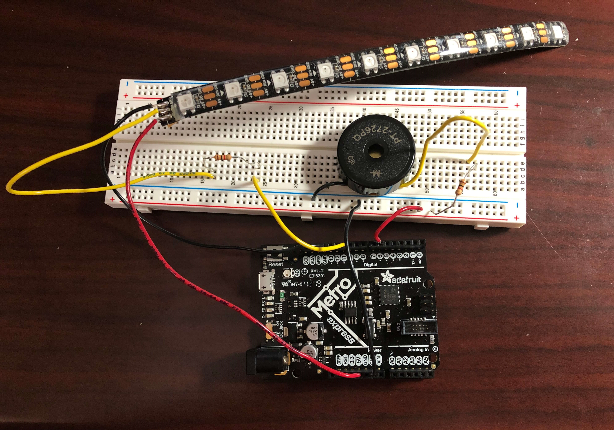
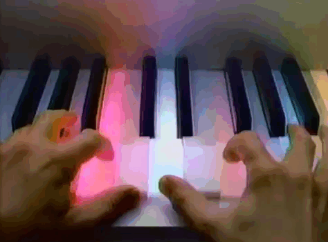
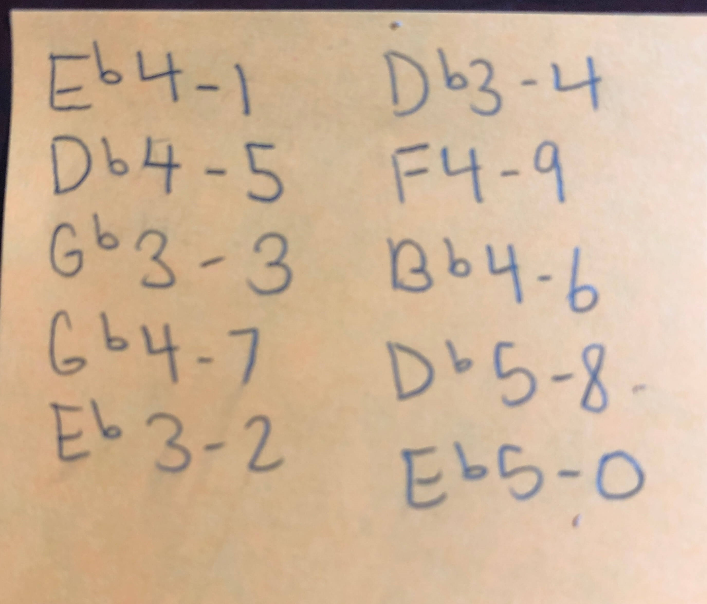

Since I am building an alarm clock for my final project, I wanted to use the buzzer more to create songs. However, since I already used the buzzer last week with my theremin, I decided to try to add an LED strip to light up in conjunction with notes played by the buzzer. This will be very useful for my final project since I will also have to coordinate lights and sound for my alarm clock. As someone who has never done any programming except in HTML, CSS, and Scratch, I had to learn a lot this week about coding in Arduino to achieve my goal. Before I detail the process, here's the video of my buzzer and lights playing the Flea Waltz twice through with the second time being 20 bpm faster:
I set up my circuit with the buzzer connected to pin 6 with a 1K resistor. Then I connected the DIN pad on the LED strip to pin 11 through a 1K resistor. Here's a picture of the circuit:

I started off trying to get the buzzer to play a song before I dealt with the LED strip. Since I didn't want to deal with compound time signatures or weird note durations, I chose to create the melody for the Flea Waltz, and I found easy sheet music to reference here on imslp.
I chose to modify pre-existing code that others had created for other songs. Specifically, I took a look at this code that robsoncouto created to play Take On Me by a-ha. Instead of having to read a frequency chart and define all the notes that I needed, I was able to use this code to speed-up the process since it already defined the frequencies for notes. My music had flats, which were not defined as variables in the code, so I had to find the enharmonic equivalents for each note with a flat (i.e. Eb4 was equivalent to D#4)
The code used an array called melody and accessed it in a for loop. The notes of the melody were followed by note durations and called-on separately in the loop of the sketch. Since I've never used arrays before, it took me some time to figure out how it worked. Eventually, I figured out how to change the existing notes and note durations to play Flea Waltz.
However, after successfully playing one iteration of the Flea Waltz, I wanted to be able to repeat the song and increase the tempo each time since the actual piece is often played in this way. To do this, instead of having the code that played each note on the buzzer in void setup, I moved the code to void loop and wrote a line to increase the tempo by 20 after the for loop finished playing through the melody array.
Although my melody was working, I still did not really understand how my code worked, specifically the for loop. However, eventually I finally figured out that the for loop was initializing thisNote and reading the actual note names of my melody array by adding 2 to thisNote to skip over the note durations in the array until thisNote < notes. The variable notes was initialized by finding sizeof(melody) / sizeof(melody[0]), which I discovered meant that the sketch was determining the number of bytes in the array to determine how long my melody was so that the for loop would stop once it reached the end of the melody. Inside the for loop, divider = melody[thisNote+1] calculated the duration of each note by reading the numerical values in between each note name (hence the +1 to read the note duration value right after whatever note name was played on the buzzer). Then, noteDuration = (wholenote) / divider and noteDuration was used in the tone function and multiplied by 0.9 for each note.
However, I still didn't have lights! My ultimate goal was to set different lights to each note when played like this:

Luckily, after figuring out how the array was called upon and what role the variable thisNote played in the for loop, I was able to modify my existing array to add values for which LED on the LED strip to light-up.
I defined variables for each NeoPixel so that I wouldn't confuse the NeoPixel numbers for the note duration numbers. Then, I initialized LED_number as 0 and then set it equal to melody[thisNote+2] like the divider variable. Then I modified the for loop's operation to be +3 instead of +2 so that each note name would be every third item in the array. Thus, my new array had each note name followed by the note duration and then the NeoPixel to light-up. Like the buzzer's delay before the next note, I had to clear the NeoPixels at the end of the for loop.
I randomly assigned NeoPixels to each different note, and luckily there were only 10 distinct notes used in the song, which corresponded perfectly to the 10 NeoPixels on the LED strip! Here's a little chart that I made:

My sketch worked how I wanted it to, but I was still unsatisfied since the NeoPixels were lighting up, but only in one color. Thus, I had to go back to modifying the array, but unlike before, I had to figure out a way to refer to a group of three numbers representing a particular RGB color instead of only one integer. I couldn't just use #define like before.
After looking at this NeoPixel guide , I was able to use uint32_t to designate a variable for the RGB color value converted into a 32-bit color value. I could now call on the specific colors I wanted in the melody array. Instead of adding 3 to thisNote, I now added 4 and set a new variables called LED_color which I could call on in strip.setPixelColor. One note now had 4 attributes, and it looked like this:
NOTE_DS4, 8, PIX_1, red,
// represents D#4 played for the duration of an eighth note, lighting up NeoPixel 2 (since they are counted started from 0) in the color red
Here is the sketch in its entirety!
#include //include Neopixel library
#define PIN 11 //NeoPixel strip connected to pin 11
#define NUMPIXELS 10 //10 Neopixels in NeoPixel strip
Adafruit_NeoPixel strip(NUMPIXELS, PIN, NEO_GRB + NEO_KHZ800); //set-up for Neopixel strip
#define PIX_0 0 //defining which LEDs in NeoPixel strip to light-up
#define PIX_1 1
#define PIX_2 2
#define PIX_3 3
#define PIX_4 4
#define PIX_5 5
#define PIX_6 6
#define PIX_7 7
#define PIX_8 8
#define PIX_9 9
#define NOTE_B0 31 //defining frequencies for each note according to frequency chart
#define NOTE_C1 33
#define NOTE_CS1 35
#define NOTE_D1 37
#define NOTE_DS1 39
#define NOTE_E1 41
#define NOTE_F1 44
#define NOTE_FS1 46
#define NOTE_G1 49
#define NOTE_GS1 52
#define NOTE_A1 55
#define NOTE_AS1 58
#define NOTE_B1 62
#define NOTE_C2 65
#define NOTE_CS2 69
#define NOTE_D2 73
#define NOTE_DS2 78
#define NOTE_E2 82
#define NOTE_F2 87
#define NOTE_FS2 93
#define NOTE_G2 98
#define NOTE_GS2 104
#define NOTE_A2 110
#define NOTE_AS2 117
#define NOTE_B2 123
#define NOTE_C3 131
#define NOTE_CS3 139
#define NOTE_D3 147
#define NOTE_DS3 156
#define NOTE_E3 165
#define NOTE_F3 175
#define NOTE_FS3 185
#define NOTE_G3 196
#define NOTE_GS3 208
#define NOTE_A3 220
#define NOTE_AS3 233
#define NOTE_B3 247
#define NOTE_C4 262
#define NOTE_CS4 277
#define NOTE_D4 294
#define NOTE_DS4 311
#define NOTE_E4 330
#define NOTE_F4 349
#define NOTE_FS4 370
#define NOTE_G4 392
#define NOTE_GS4 415
#define NOTE_A4 440
#define NOTE_AS4 466
#define NOTE_B4 494
#define NOTE_C5 523
#define NOTE_CS5 554
#define NOTE_D5 587
#define NOTE_DS5 622
#define NOTE_E5 659
#define NOTE_F5 698
#define NOTE_FS5 740
#define NOTE_G5 784
#define NOTE_GS5 831
#define NOTE_A5 880
#define NOTE_AS5 932
#define NOTE_B5 988
#define NOTE_C6 1047
#define NOTE_CS6 1109
#define NOTE_D6 1175
#define NOTE_DS6 1245
#define NOTE_E6 1319
#define NOTE_F6 1397
#define NOTE_FS6 1480
#define NOTE_G6 1568
#define NOTE_GS6 1661
#define NOTE_A6 1760
#define NOTE_AS6 1865
#define NOTE_B6 1976
#define NOTE_C7 2093
#define NOTE_CS7 2217
#define NOTE_D7 2349
#define NOTE_DS7 2489
#define NOTE_E7 2637
#define NOTE_F7 2794
#define NOTE_FS7 2960
#define NOTE_G7 3136
#define NOTE_GS7 3322
#define NOTE_A7 3520
#define NOTE_AS7 3729
#define NOTE_B7 3951
#define NOTE_C8 4186
#define NOTE_CS8 4435
#define NOTE_D8 4699
#define NOTE_DS8 4978
#define REST 0
uint32_t red = strip.Color(255, 0, 0); //set variables for RGB values converted into 32-bit colors
uint32_t green = strip.Color(0, 255, 0);
uint32_t blue = strip.Color(0, 0, 255);
uint32_t yellow = strip.Color(255, 255, 0);
uint32_t cyan = strip.Color(0, 255, 255);
uint32_t magenta = strip.Color(255, 0, 255);
uint32_t orange = strip.Color(255, 125, 0);
uint32_t violet = strip.Color(125, 0, 255);
uint32_t white = strip.Color(255, 255, 255);
uint32_t turquoise = strip.Color(0, 255, 125);
int tempo = 180; //set initial tempo to 180 beats/min
int buzzer = 6; //buzzer connected to pin 6
// notes of the melody followed by the duration, NeoPixel number to light-up, and color of LED
// a 4 means a quarter note, 8 an eighth note
int melody[] = {
NOTE_DS4, 8, PIX_1, red, NOTE_CS4, 8, PIX_5, cyan,
NOTE_FS3, 4, PIX_3, blue, NOTE_FS4, 4, PIX_7, magenta, NOTE_FS4, 4, PIX_7, white, NOTE_DS4, 8, PIX_1, red, NOTE_CS4, 8, PIX_5, cyan,
NOTE_FS3, 4, PIX_3, blue, NOTE_FS4, 4, PIX_7, magenta, NOTE_FS4, 4, PIX_7, white, NOTE_DS4, 8, PIX_1, red, NOTE_CS4, 8, PIX_5, cyan,
NOTE_FS3, 4, PIX_3, blue, NOTE_FS4, 4, PIX_7, magenta, NOTE_DS3, 4, PIX_2, green, NOTE_FS4, 4, PIX_7, white,
NOTE_CS3, 4, PIX_4, yellow, NOTE_F4, 4, PIX_9, blue, NOTE_F4, 4, PIX_9, white, NOTE_DS4, 8, PIX_1, red, NOTE_CS4, 8, PIX_5, cyan,
NOTE_CS3, 4, PIX_4, yellow, NOTE_F4, 4, PIX_9, blue, NOTE_F4, 4, PIX_9, white, NOTE_DS4, 8, PIX_1, red, NOTE_CS4, 8, PIX_5, cyan,
NOTE_CS3, 4, PIX_4, yellow, NOTE_F4, 4, PIX_9, blue, NOTE_F4, 4, PIX_9, white, NOTE_DS4, 8, PIX_1, red, NOTE_CS4, 8, PIX_5, cyan,
NOTE_CS3, 4, PIX_4, yellow, NOTE_F4, 4, PIX_9, blue, NOTE_DS3, 4, PIX_2, green, NOTE_F4, 4, PIX_9, white,
NOTE_FS3, 4, PIX_3, blue, NOTE_FS4, 4, PIX_7, magenta, NOTE_FS4, 4, PIX_7, white, NOTE_DS4, 8, PIX_1, red, NOTE_CS4, 8, PIX_5, cyan,
NOTE_AS4, 4, PIX_6, turquoise, NOTE_FS4, 4, PIX_7, magenta, NOTE_FS4, 4, PIX_7, white, NOTE_DS4, 8, PIX_1, red, NOTE_CS4, 8, PIX_5, cyan,
NOTE_AS4, 4, PIX_6, turquoise, NOTE_FS4, 4, PIX_7, magenta, NOTE_FS4, 4, PIX_7, white, NOTE_DS4, 8, PIX_1, red, NOTE_CS4, 8, PIX_5, cyan,
NOTE_AS4, 4, PIX_6, turquoise, NOTE_FS4, 4, PIX_7, magenta, NOTE_CS5, 4, PIX_8, orange, NOTE_FS4, 4, PIX_7, white,
NOTE_DS5, 4, PIX_0, violet, NOTE_F4, 4, PIX_9, blue, NOTE_F4, 4, PIX_9, white, NOTE_DS4, 8, PIX_1, red, NOTE_CS4, 8, PIX_5, cyan,
NOTE_DS5, 4, PIX_0, violet, NOTE_F4, 4, PIX_9, blue, NOTE_F4, 4, PIX_9, white, NOTE_DS4, 8, PIX_1, red, NOTE_CS4, 8, PIX_5, cyan,
NOTE_DS5, 4, PIX_0, violet, NOTE_F4, 4, PIX_9, blue, NOTE_F4, 4, PIX_9, white, NOTE_DS4, 8, PIX_1, red, NOTE_CS4, 8, PIX_5, cyan,
NOTE_DS5, 4, PIX_0, violet, NOTE_F4, 4, PIX_9, blue, NOTE_CS5, 4, PIX_8, orange, NOTE_F4, 4, PIX_9, white,
NOTE_AS4, 4, PIX_6, turquoise, NOTE_FS4, 4, PIX_7, magenta, NOTE_FS4, 4, PIX_7, white,
};
void setup() {
strip.begin(); //initialize NeoPixel strip
strip.show(); //turn off all pixels
strip.setBrightness (10); //set brightness low to reduce draw
}
void loop() {
strip.clear(); // Set all pixel colors to off
strip.show();
int notes = sizeof(melody) / sizeof(melody[0]); //calculate how many notes are in the melody
int wholenote = (60000 * 4) / tempo; //calculate the duration of a whole note in ms
int divider = 0, noteDuration = 0;
int LED_number = 0;
int LED_color = 0;
for (int thisNote = 0; thisNote < notes ; thisNote = thisNote + 4) {
divider = melody[thisNote + 1]; //calculate the duration of each note
noteDuration = (wholenote) / divider;
tone(buzzer, melody[thisNote], noteDuration * 0.9); // only play the note for 90% of the duration, leaving 10% as a pause
LED_number = melody[thisNote + 2]; //calculate NeoPixel number to light-up
LED_color = melody[thisNote + 3]; //calculate color of NeoPixel
strip.setPixelColor(LED_number, LED_color); //set specified NeoPixel number to specified color
strip.show();
delay(noteDuration); //wait for the specified duration before playing next note
noTone(buzzer); //stop the waveform generation before the next note
strip.clear(); //turn off Neopixel before next Neopixel lights-up
strip.show();
}
tempo = tempo + 20; //increase the tempo by 20 bpm each time the song is fully played through
}